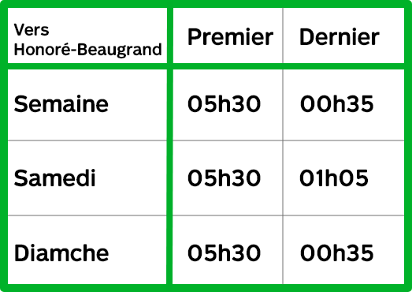

Métro
Stations
Montmorency 
De la concorde
cartier
Henri-bourassa
Sauvé
Crémazie
Jarry
Beaubien
Rosemont
Laurier
Mont-Royal
Sherbrooke
Berri-Uqam
Champs-de-mars
Place-d'arme
Square-victoria-gaci
Bonaventure
Lucien-l'allier
Geaorge-vanier
Lionel-groulx
Place-saint-henri
Vendôme
Villa-maria
Snowdown
Côte-sainte-catherine
Plamondon
Namur
De la savane
Du collège
Côte-vertu
Honoré-Beaugrand
Radisson
Langelier
Cadillac
Assomption
Viau
Pie-IX
Joliette
Préfontaine
Frontenac
Papineau
Beaudry
Berri-Uqam
Saint-Laurent
Place-Des-Arts
McGill
Peel
Guy-Concordia
Atwater
Lionel-Groulx
Charlevois
Lasalle
De l'église
Verdun
Jolicoeur
Monk
Angrignon
Bus
10 - De Lormier
10 - De Lormier
10 - De Lormier
10 - De Lormier
10 - De Lormier
10 - De Lormier
10 - De Lormier
10 - De Lormier
10 - De Lormier
10 - De Lormier
10 - De Lormier
10 - De Lormier
10 - De Lormier
10 - De Lormier
10 - De Lormier
10 - De Lormier
10 - De Lormier
10 - De Lormier